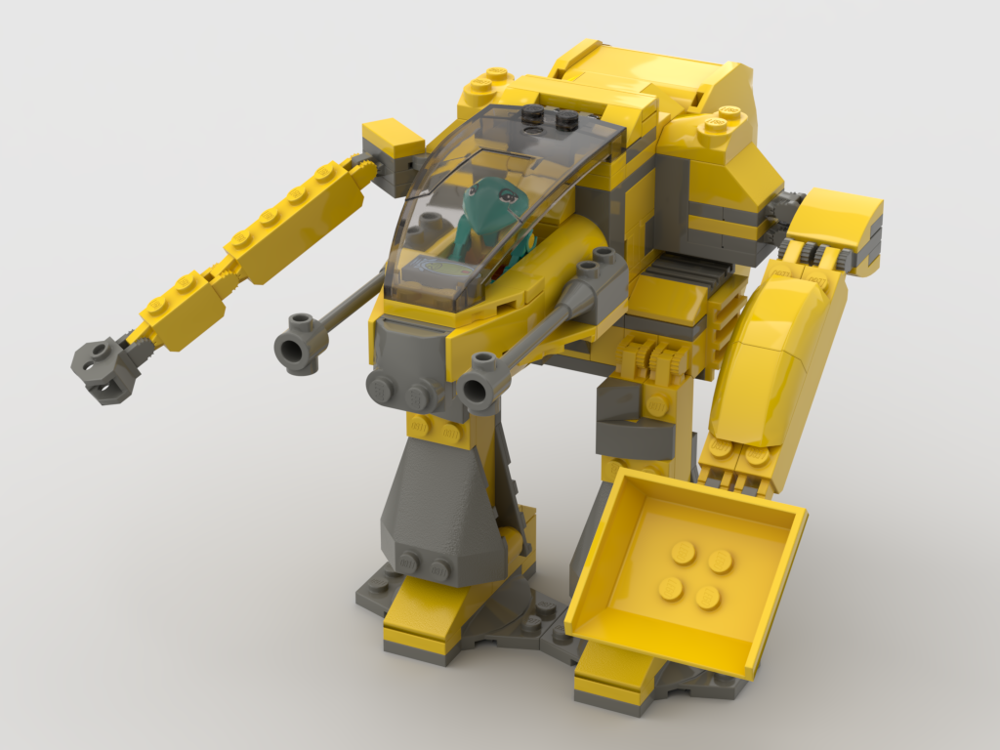
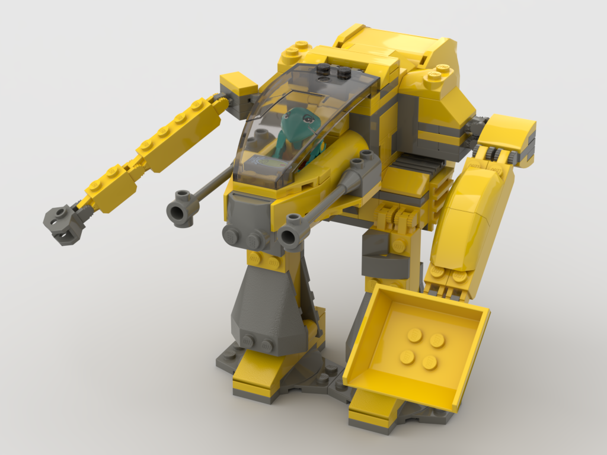

Work Experience
I worked as an independent yard care contractor from 2013 to 2022. In addition, I worked under Premier Staffing Solutions for two years until my client discontinued using their services
Around 2015-2022, I started watching the homes of neighbors and friends when they left on vacation in addition to taking care of their pets. I was also hired from time to time to watch kids or perform other such tasks.
From the early summer of 2017 to the end of 2018, I was hired by OBEC Consulting Engineers as an intern to help scan in old, paper copies of plans and files.
Because of the size of the job, several other interns were hired later, and I was promoted to Senior Archive Specialist, where I became in charge of the entire archive network.
Just before completely scanning in every last paper plan/file, OBEC merged with DOWL. Thus, I finished my internship as an employee of DOWL Engineering.
During the summer of 2019, I was hired by Buck General Contracting to help remodel a house. It was a new experience for me, but I learned so much!
From the summer of 2020 to the summer of 2022, I was hired by Elegant Elephant Baking Co. as a dishwasher. After only three months, I was promoted to assist in baking tasks, and completely run the flour mixing operations in addition to dish washing.
During the summer of 2021, I was hired by PONO Security to provide security at the U.S. Olympic trials, it was hard work because of the extremely hot temperatures, but I was glad to be able to help out my hometown at this momentous occation.
Starting July 2022, I am now a Tech Team Member of FAST Enterprises and work on software development for governments.
Education
Preschool to Elementary: Homeschooled - with some interaction at my local, elementary school - Irvington Elementary - where I ran on the track team and where I studied occasionally.
Middle School: Homeschooled - after completing all available history courses for highschoolers, my parents placed me in a college-level, self-study course.
High School: Homeschooled until 11th grade - after completing all available science courses for highschoolers, my parents placed me a college-level, self-study of physics.
Lane Community College: Upon reaching 11th grade, I decided to enroll in the local Community College by utilizing a charter school's early-college program.
I attended Lane Community College for three years - majoring in Computer Science and maintaining a GPA of 4.238
I graduated Lane Community College with four degrees!:
- Associate of Science Oregon Transfer Computer Science
- Associate of General Studies
- Associate of Science
- Associate of Arts Oregon Transfer
In addition, I graduated my charter school - Baker Charters School - as their Valedictorian!
University of Oregon: Attended the University of Oregon for two years - majoring in Computer Science and maintaining a GPA of 3.85
I graduated from the University of Oregon with a:
- Bachelors in Computer Science
Chess and Hamsters
My family and I helped to raise two batches of hamsters - 14 and 16 babies a piece. I have always loved hamsters and their curious, playful nature.
I also love to play chess with friends, online, and learn by myself. It's a good exercise in critical thinking as well as thinking ahead, and I thoroughly enjoy it!
The following pictures are just a few of my hamsters!


LEGO!
I may be a computer science major, but that doesn't mean I can't enjoy building with LEGO and expressing my creativity! Big shout out to Bricklink.com's Stud.io software that helped me to create a digital design of these mechs I created.
 
